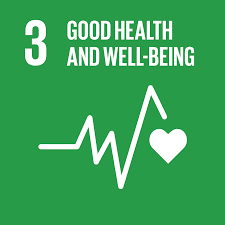
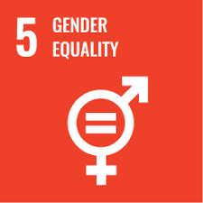
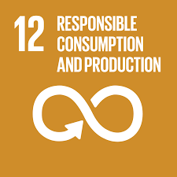
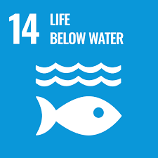

Menghapus segala bentuk kemiskinan di seluruh dunia

Mengakhiri kelaparan dan meningkatkan makanan bergizi bagi semua orang

Meningkatkan kehidupan sehat dan kesejahteraan bagi semua umur

Menyediakan kesempatan pendidikan yang melibatkan dan berkualitas bagi para pelajar

Mewujudkan kesetaraan gender serta memberdayakan perempuan dan anak perempuan

Memberi akses air yang bersih dan sanitasi ke seluruh dunia

Menjamin energi yang terjangkau, andal, dan berkelanjutan

Mendorong pertumbuhan ekonomi dan kesempatan bekerja yang layak bagi semua

Membangun infrastruktur kuat, mendorong industrialisasi inklusif, dan memajukan inovasi

Mengurangi kesenjangan antarnegara dan di dalamnya

Membangun kota yang aman, nyaman, kuat, dan berkelanjutan

Memastikan pola makan dan produksi yang berkelanjutan

Mengambil tindakan segara dalam melawan perubahan iklim dan dampaknya

Melindungi dan melestarikan ekosistem, sumber daya, serta kehidupan laut dan samudera

Melindungi dan melestarikan ekosistem darat, lingkungan, serta keanekaragaman hayati

Membangun masyarakat yang damai, aman, nyaman, adil, dan lembaga yang efektif

Memperkuat kemitraan global untuk menndukung tujuan dan upaya seluruh SDGs